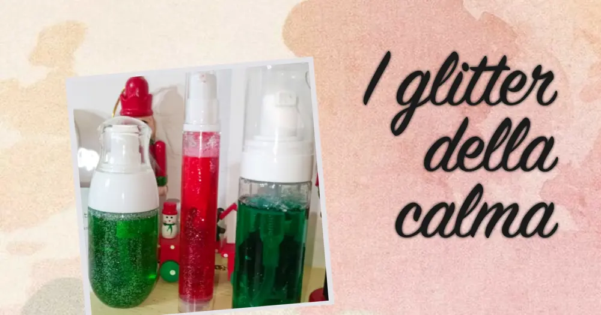
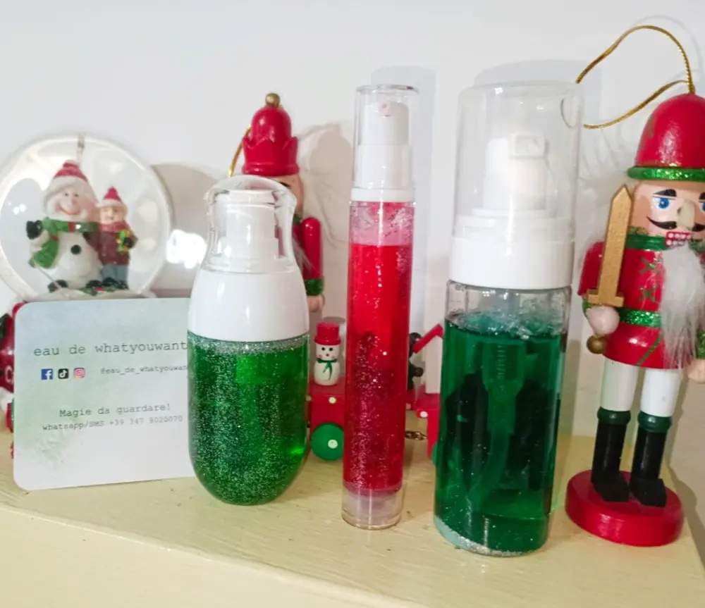

La magia dei glitter

Un mesetto fa ho avuto il piacere di ricevere un prodotto troppo carino, che mi riporta all'infanzia. I glitter di
Eau de Whatyouwant
Di cosa si tratta?
Io preferisco chiamarle pozioni che ci fanno tornare bambini, sì, perché ho avuto il piacere di ricevere dei flaconi con all'interno un liquido colorato con glitter colorati e profumati.
Un'idea che all'inizio non capivo ma poi ho iniziato ad intuire il pensiero della creatrice, ovvero riportare pace e senso di abbandono.
In quelle piccole 'pozioni' possiamo perderci e abbandonarci ad un momento di totale relax.
Vi è ma capito di guardare qualcosa e incantarvi?
Ecco, con questi glitter così succede, quindi una sensazione che possono provare sia bambini ma anche adulti.
Ma cosa ha ispirato la creatrice a inventare una cosa così?
Il metodo Montessori, sì, proprio lei, l'educatrice del 1890.
Come il metodo Montessori utilizzava i barattoli della calma, oppure chiamato calming jar, anche l'autrice di queste bottiglie con glitter ha ideato questo progetto per portare calma e relax mentale.

Il barattolo della calma è utile in quelle occasioni in cui il bambino si sente un po’ stressato o turbato e ha la necessità di avere a disposizione qualche minuto per tranquillizzarsi.
Il barattolo della calma contiene dei brillantini colorati. Basta scuoterlo per creare una piccola magia. Il bambino per qualche minuto viene attirato dal barattolo e si ferma ad osservare i brillantini che lentamente ricadono sul fondo. Si tratta di un modo semplice per riportare l’attenzione del bambino al momento presente.
Ed è cosi che questo sito ha pensato bene di creare delle bottigliette di verie forme, colori e profumi che riportano alla calma, alla tranquillità, al gioco, alla spensieratezza.
Insomma, come vi dicevo prima, fa tornare bambini un po' tutti.
Consiglio queste simpatiche e belle bottiglie sia per un'educazione alla tranquillità, ma anche come un gadget di feste.
Vi allego il sito QUI
Ringrazio Giulia per aver permesso questa collaborazione e grazie soprattutto per avermi fatto entrare nel suo mondo magico.